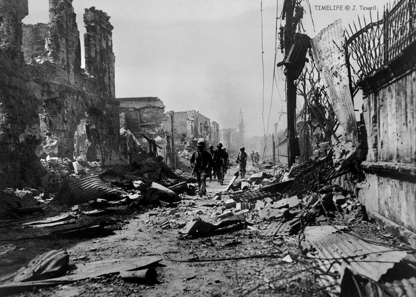

War can have many effects on people and societies, including physical and psychological harm, economic and social decline, and environmental damage: Physical harm. War can directly threaten health by killing and injuring civilians and soldiers, and indirectly by destabilizing the world. Other physical consequences include malnutrition, illness, disability, and sexual violence.Death, injury, sexual violence, malnutrition, illness, and disability are some of the most threatening physical consequences of war, while post-traumatic stress disorder (PTSD), depression, and anxiety are some of the emotional effects.
The indirect effects of militarized conflicts' affect access to food, hygiene, health services, and clean water. Women suffer more harshly from the damage to the health as well as overall well-being, other infrastructure damages, and the wider economic damage as well as from dislocation during and post-conflict. War is a complex issue that requires careful consideration and understanding to prevent it from occurring in the future. Its effects are far-reaching and devastating, causing the destruction of property and infrastructure, loss of life, psychological trauma, economic hardship, displacement of people, and increased militarization. The pain, suffering, and displacement that come alongside a traumatic event is an ever-present aspect of this ongoing violence. The emotions and circumstances connected to this violence are known as “war trauma” and can potentially bring long-term consequences to a person's mental health and well-being.
An estimated 60 million people died, including 21 million soldiers and 40 million civilians. Many civilians lived on all continents, and 28 million of the civilian deaths were from the USSR and China. The war also displaced 30 million people in Europe, and millions of Japanese and Koreans returned to their homelands after living elsewhere. The war left much of Europe and Asia in ruins, with flattened cities and towns, destroyed bridges and railroads, and scorched countryside.
The war destroyed the resources, agriculture, and manufacturing of every industrial country except the United States, and caused shortages of food, fuel, and consumer products. War-ravaged countries couldn't produce enough goods for their own people, and many citizens remained undernourished for almost a decade. The war permanently altered political and economic systems in many countries, and led to the rise of communist influence in East Asia. It also demolished several empires, including the German, Japanese, British, and French, while enhancing others, such as the American and Soviet.
ww2 soldier having PTSD